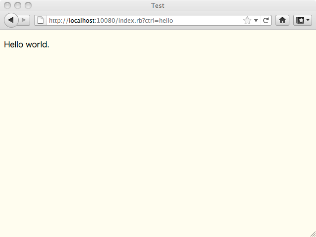
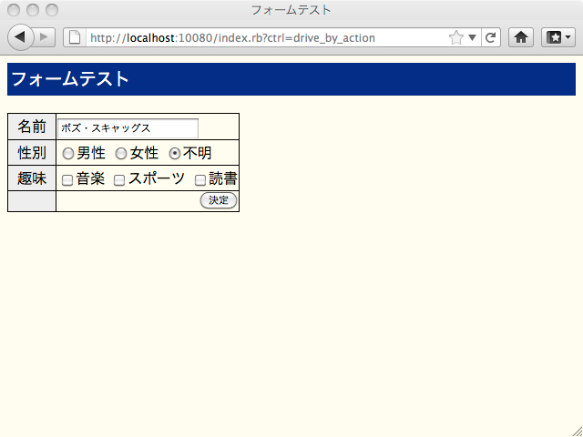

組み込み向けウェブインターフェースフレームワーク「Alone」とその応用機器の紹介
- はじめに
- 開発の動機
- 設計課題とその優先順位
- Alone の機能、特長
- 使ってみよう 1 Hello world
- 使ってみよう 2 フォーム入力
- 使ってみよう 3 ToDo メモ
- 使ってみよう 4 グラフの描画
- 応用機器の紹介
- おわりに
- 著者について
はじめに
有限会社アイナスの東裕人 (ひがしひろひと) といいます。弊社では、小規模ながら組み込みシステムを手がけております。
最近は組み込み機器でもネットワークに接続し、ウェブインターフェースを提供するものが増えてきました。そうした状況の中、Ruby を使って組み込み機器に適したフレームワーク「Alone」を開発しオープンソースライセンスで公開することができましたので、皆様にご紹介するとともに、その応用機器についても併せてご紹介したいと思います。
組み込み機器のウェブインターフェースといっても所詮はウェブアプリであるので、フレームワークとしては一般的なサーバーで動作するアプリケーションにも十分利用でき、小さなシステムをさっと作成する場合にたいへん便利に使う事ができますので、興味を持って読んでいただけるのではないかと思います。
開発の動機
ウェブインターフェースを開発する場合、組み込み機器のような小さなリソースのマシンでは、C 言語ですべて開発する場合があります。しかし昨今ではだんだんとプロセッサの速度も向上し、開発効率の面からスクリプト言語で開発も求められるようになってきました。こうなってくると、「ウェブなら Ruby が使いたい」と思うわけですが、Ruby の代表的なウェブフレームワーク、Rails ではさすがに重そうだと思わざるを得ません。
また組み込み機器特有と言っても良いかもしれない作業であるユーザーによるファームアップデートを考えた場合も、一般的なフレームワークシステムを採用した場合は、その仕組み作りが大変そうです。かといって、いまさら生 cgi の時代ではないだろうと思います。そこで、アプリケーションと一体になって、まるでＣ言語で言うところの libc をスタティックリンクするかのように使う事ができるフレームワークが欲しいと思い、開発を開始しました。
設計課題とその優先順位
開発にあたり、以下のような設計課題を掲げ、優先順位づけを行っています。
- 導入容易性
- 特別なインストール作業なしで使うことができる
- 既存サーバー（既存 DB）への導入
- 動作速度の維持
- ワンボードマイコンでの動作
- 構造の整理および簡素化
- 疎結合モジュール構造
- 使いやすさ
- 学習コストが小さいこと
- コードリーディング性の維持
かいつまんで説明をしますと、「特別なインストール作業なしで使う事ができる」とは、極端な話をすれば、アプリケーションのファイル群を実機にコピーするだけで動作可能にすることを第一目標にしています。これは、ファームアップデートを実施する場合において、なんらかの方法でアップロードされた tgz ファイルなどを、実機上で展開するだけでファームアップデートが完了するということです。
またこの特性は、一般的なサーバーアプリにおいても、プログラムファイル群をサーバーへアップロードして、設定ファイルを微調整するだけで稼働開始できるということになり、掲示板やアンケートフォーム、メールフォームなど、ちょっとしたウェブアプリをすぐ動作させたい場合に、大変便利に使える特長となります。
他にも「学習コストが小さいこと」や「コードリーディング性の維持」も課題としてあげています。アプリケーションの開発効率の面からいえば、Ruby の文法を拡張してでもタイプ量を減らしたり、DSL といった戦略もあるわけですが、そのような場合、Ruby 初心者を遠ざけることにもつながりかねません。Alone では、ユーザーのコードはすべて Ruby の文法内で記述できるようにしています。そのため、コードの見た目がすこし煩雑に感じる部分も発生しますが、そこはトレードオフとして割り切っています。
Alone の機能、特長
生 cgi 風の使い方と、一般的なフレームワークのコントローラを使うやり方と２種類の使い方を用意しています。これを、ダイレクトアプローチおよびコントローラアプローチと称して区別しています。しかし、いままでの経験からは、よほど小さいアプリケーションでないかぎり、コントローラアプローチを使うほうがよさそうです。
アプリケーションをMVC構造で開発することをサポートしますが、MVC 構造を強制することはしません。
フォームを使ったユーザーとのインターフェースについて、フィルター、バリデーション、フォーム HTML の簡易自動生成の機能を有します。フィルターは、ユーザー入力値の加工 (全角半角変換など) 、バリデーションは入力値の正当性確認を行う機能です。
Cookie を使ったセッション維持機能を有します。また利便性のため、セッション変数がグローバルなものと、コントローラごとにローカルなものの２種類を用意しています。
上記セッションを使ったユーザーログインのための仕組みを用意しています。
HTML テンプレートは、eRuby を採用しています。ただし、テンプレートのネストや変数事前展開を実現するために、標準の ERB ライブラリは使用せず、Erubis 由来のコードを拡張して使用しています。Erubis のコードは高速化のための工夫がたくさん盛り込まれ大変すばらしいものであるので、当プロジェクトでも使わせていただいています。作者の桑田さん、ありがとうございます。
データの保存については、ごく単純な ORM のようなものを用意するにとどめています。
データの CRUD をサポートするため、コントローラに定型的な CRUD の為のメソッドを追加できるようにしており、これを管理インターフェース mif と称しています。
一般的な (どんなウェブサーバーでも使えるであろう) cgi1.1 インターフェースを採用しています。その他への拡張は今のところ考えていません。
Ruby1.9.1 以降専用です。Ruby1.8 では動作しません。Windows 版 Ruby でもある程度動作するようですが、開発リソースを Windows に割くことは現状では無理なので、実質 Unix 系マシン用です。
使ってみよう 1 Hello world
ここでは、コントローラアプローチを使ったサンプルプログラムを動作させながら、その解説を行いたいと思います。
Alone は、http://www.ruby-alone.org/ からダウンロードできます。2011/5時点の最新版は、alone-1.2.tgz です。ダウンロードしたら、Ruby1.9.1 以降がインストールされている Linux マシンなどに展開します。
lib ディレクトリに簡易ウェブサーバが、examples_controller ディレクトリにサンプル群がありますので、以下のようにタイプしてこれらを使いましょう。
cd alone-1.2
ruby lib/al_server.rb examples_controllerエラー無く実行できたら、http://localhost:10080/ でウェブサーバーが動作していますので、アクセスしてみましょう。メニューが表示されますので、「ハローワールド」をクリックしてください。 
プログラムを見ていただくと、既存フレームワークをかじったことがある方なら、ほぼ一目瞭然なのではないでしょうか。
プログラム main.rb
require 'al_template'
class AlController
def action_index() # デフォルトアクション
@my_message = "Hello world."
AlTemplate.run( 'index.rhtml' )
end
end
ユーザーのコードは、main.rb ファイル内へ AlController クラスのメソッドとして記述します。コントローラへは、ユーザーのブラウザ操作により規定のアクションが送信されますが、最初は特に何もアクションが無いので、デフォルトのアクションである action_index() という名前のメソッドが呼ばれます。
このサンプルでは、action_index() メソッドで変数 @my_message に表示したい文字列を入れてから、テンプレートエンジンへ処理を依頼しています。ここでは、テンプレートファイル名 index.rhtml を指示しており、これは省略できません。
もちろんフレームワークのデザインとして、省略させるデザインを採用することもできたのですが、そうしてしまうと、このフレームワークに慣れていない人がこのコードを読んだとき、次になにが起こっているのか、どのファイルを見ればよいのか、手がかりがありません。ここでは、設計課題である「学習コストが小さいこと」「コードリーディング性の維持」を満たすため、あえてタイプ量の増加に目をつむり、ファイル名を指定させるデザインを採用しました。
テンプレート index.rhtml
<%= header_section %>
<title>Test</title>
<%= body_section %>
<p><%=h @my_message %></p>
<%= footer_section %>テンプレートファイル内では、３つのセクション header, body, footer が用意してあります。実質使えるのは、header と body のみで、それぞれ html の head と body に該当すると考えてください。この例では、head にタイトルを表示し、body に main.rb から渡された文字列を表示しています。
生成された HTML コード
<!DOCTYPE HTML PUBLIC "-//W3C//DTD HTML 4.01//EN" "http://www.w3.org/TR/html4/strict.dtd">
<html>
<head>
<meta http-equiv="Content-Type" content="text/html; charset=UTF-8">
<meta http-equiv="Content-Script-Type" content="text/javascript">
<meta http-equiv="Content-Style-Type" content="text/css">
<link type="text/css" rel="stylesheet" href="/al_style.css">
<title>Test</title>
</head>
<body>
<p>Hello world.</p>
</body>
</html>使ってみよう 2 フォーム入力
フォームを表示し、入力値の確認と確定を行うサンプルを解説します。drive_by_action ディレクトリのサンプルです。 
(1) コンストラクタ
Alone では、ブラウザから渡される値をすべて AlForm オブジェクト経由で受け取ります。そのため、ブラウザからどのようなデータが送られてくるべきか、AlFormオブジェクトに詳細に記述します。一見面倒なようですが、この情報を使ってブラウザから送られてくる情報の正当性を確認でき、ユーザープログラムにとって大きなメリットがあるので、このような設計にしています。このオブジェクトは、さまざまなアクションで使いまわすので、コンストラクタで生成しておくのが常套手段です。
また、ここで初めて action が出てきました。ブラウザでこのフォームを確定すると、アクションとして ‘confirm’ が発行され、コントローラの action_confirm() メソッドが呼ばれる事になります。
プログラム main.rb
class AlController
def initialize()
@form = AlForm.new(
AlText.new( "text1", :label=>"名前", :value=>"ボズ・スキャッグス" ),
AlRadios.new( "radio1", :label=>"性別",
:options=>{ :r1=>"男性", :r2=>"女性", :r3=>"不明" }, :value=>"r3" ),
AlCheckboxes.new( "check1", :label=>"趣味",
:options=>{ :c1=>"音楽", :c2=>"スポーツ", :c3=>"読書" }, :required=>true ),
AlSubmit.new( "submit1", :value=>"決定",
:tag_attr=> {:style=>"float: right;"} )
)
@form.action = Alone::make_uri( :action => 'confirm' )
end
実行画面と、AlForm オブジェクトに指示した AlText, AlRadios, AlCheckboxes, AlSubmit を比較してみてください。HTML フォームと、AlForm が、一対一で対応しているのがわかると思います。Alone では、AlText 等のこれら内包されたオブジェクト類を、ウィジェット (widget) と呼称しています。
(2) デフォルトアクションの定義
アプリケーションを起動した直後は、空のフォームを表示するだけです。「空の」といっても、初期値が必要な場合は、フォーム定義の時に、:valueへ指定することで初期値をもったフォームになります。この例でいえば、名前欄と性別欄に初期値が入っていますね。
プログラム main.rb のaction_index()
##
# デフォルト動作
#
#@note
# 念のためセッション変数を全て消去してから、デフォルト画面を表示
#
def action_index()
session.delete_all()
AlTemplate.run( 'index.rhtml' )
end
テンプレートでは、構造は hello world の時と変わりませんが、今回は @form.make_tiny_form() により、フォームの自動生成をしています。ごくごく定型的なフォームですが、とりあえず動作を確認したい（見た目の調整は後回しでも良い）時には、とても便利に使えます。
テンプレート index.rhtml
<%= header_section %>
<title>フォームテスト</title>
<%= body_section %>
<div class="al-page-header">フォームテスト</div>
<%= @form.get_messages_by_html() %> # POSTデータにエラーがあった場合にメッセージ表示
<%= @form.make_tiny_form() %> # フォーム自動生成
<%= footer_section %>(3) 決定ボタン(submit) を押された時の処理

このアプリケーションでは、ユーザーの入力値を一度そのまま表示させて確認させる仕様です。フォームオブジェクトの定義で、:action=>‘confirm’ となっていた事を思い出してください。このフォームが submitされると、action_confirm() メソッドが呼び出されます。
プログラム main.rb のaction_confirm()
##
# 確認画面
#
#@note
# フォームから送られた値を確認し、
# OKならセッションに保存した上で、確認画面を表示する。
# NGならデフォルトフォームに戻す。
#
def action_confirm()
if @form.validate()
session[:values] = @form.values
AlTemplate.run( 'confirm.rhtml' )
else
AlTemplate.run( 'index.rhtml' )
end
end
このアクションでは、まずフォームをバリデートしてエラーとなる値が入っていないことを確認します。エラーがなければ、セッション変数 :values へバリデーション済みのデータを保存し、確認画面 confirm.rhtml を表示します。
バリデーションエラーがあれば、index.rhtml で生成するフォームに戻って、再度入力を促します。
ここで、フォームオブジェクトの定義を再度確認してみてください。チェックボックスの定義に、:required=>true という表記がしてあるのがわかるでしょうか。この指示によって、必ずどれかが選ばれていなければバリデーションを通らないことが保証されます。他にもテキストボックスなどは正規表現を使ってバリデータを記述できますし、ラジオボタン、チェックボックスなどは、フォームオブジェクトに記述した :options の値しか存在できませんので、ユーザープログラム側で異常値への対応をしなくてもよくなります。
テンプレート confirm.rhtml
<%= header_section %>
<title>フォームテスト</title>
<%= body_section %>
<div class="al-page-header">入力値確認</div>
<%= @form.make_tiny_sheet() %>
<p>よろしいですか？</p>
<a href="<%=h Alone::make_uri( :action => 'cancel' ) %>">いいえ</a>
<a href="<%=h Alone::make_uri( :action => 'commit' ) %>">はい</a>
<%= footer_section %>テンプレートには、興味深い点が２つあります。
まずは、make_tiny_sheet() メソッド。これは、make_tiny_form()と対になるメソッドで、フォームで送られた値を簡易的に表示するものです。
もう一つは、make_uri()メソッド。これはフォームオブジェクトの作成でも出てきましたが、今回はそれぞれ cancel と commit という２つの違ったアクションを生成し、リンクテキストとして表示しています。
(4) 確認画面で「はい」を選ばれた場合

先の確認画面で、「はい」を選んだ場合は、アクション commit が送られます。この場合、セッションから変数を戻してフォームにセットし直し、完了画面を表示します。
プログラム main.rb の action_commit()
def action_commit()
@form.set_values( session[:values] )
AlTemplate.run( 'commit.rhtml' )
end
テンプレート commit.rhtml
<%= header_section %>
<title>フォームテスト</title>
<%= body_section %>
<div class="al-page-header">入力終了</div>
<%= @form.make_tiny_sheet() %>
<p>完了しました。</p>
<a href="<%=h Alone::make_uri() %>">最初へ</a>
<%= footer_section %>(5) 確認画面で「いいえ」を選ばれた場合
先の確認画面で、「いいえ」を選んだ場合は、アクション cancel が送られます。この場合、セッションから変数を戻した上で、入力フォームを再度表示します。
プログラム main.rb の action_cancel()
def action_cancel()
@form.set_values( session[:values] )
AlTemplate.run( 'index.rhtml' )
session.delete( :values )
end
使ってみよう 3 ToDo メモ
これまで２つの例で基本的な入出力の説明を行いました。実際のアプリケーションでは、入力されたデータがデータベースなどに保存される場合も多く、そのための簡単なORMのようなものも用意してあります。ただし、本格的なORMではありません、誤解しないでください。
また、データのCRUDについては定型的な処理になりやすく、フレームワークの出番です。当初 Python 用フレームワーク Django の管理インタフェースを目標にして設計を始めましたが、Ruby のオープンクラス特性を利用した、当初の目標とは似てもにつかないものに仕上がりました。
この２つを利用したサンプル、ToDoリストを紹介します。実際にDBに接続するには、それぞれのDB用の接続ライブラリが必要になるので、ここでは実際のDBではなく、簡易的にファイルを使って保存する todo_file を紹介します。
(1) 必要なファイルの require
いままでは、あまり重要でなかったので説明をスキップしていましたが、今回はキーになる作業なので説明を入れます。
ライブラリ “al_persist_file” を require すると、AlPersist クラスが使えるようになります。このクラスは、データ永続化のためのラッパークラスで、CRUDのためのメソッド、それぞれ create(), read(), update(), delete() を持ちます。
ライブラリ “al_mif” を require すると、AlController に CRUD のためのアクションが追加され、アクションに適した初期テンプレートも使えるようになります。
プログラム main.rb
require 'al_form'
require 'al_persist_file' # ファイルを使ったデータ永続化機構を使う
require 'al_mif' # AlControllerへ定型的なCRUDの為のメソッドを注入
(2) コンストラクタ
やはりここでも、フォームの定義がメインになります。また、データ永続化機構のためのオブジェクトも生成します。
mif では、固定的なアトリビュート名 @form, @persist を使う事にしていますので、その変数名でオブジェクトを生成しておきます。
プログラム main.rb
DB_FILE = "data/todo.txt"
class AlController
def initialize()
@form = AlForm.new(
AlInteger.new( "id", :foreign=>true ),
AlDate.new( "create_date", :label=>"登録日", :value=>Time.now.strftime( '%Y/%m/%d' ) ),
AlTextArea.new( "memo", :label=>"ToDoメモ", :required=>true ),
AlDate.new( "limit_date", :label=>"期限" ),
AlSubmit.new( "submit1", :value=>"決定",
:tag_attr=> {:style=>"float: right;"} )
)
# use file
@persist = AlPersistFile.connect( DB_FILE )
end
ここで初めてAlDate オブジェクトが出てきました。これは、HTML 的には <input type=”text”> ですが、Alone では日付のためのバリデータを内包するなど、日付け入出力のために便利な機能を持っています。その他にもいくつかこのような用途のためのウィジェットを定義してありますので、詳しくはウェブ上のリファレンスマニュアルを参照してください。
(3) デフォルトアクションの定義
mifによって定義されている、リストビューアクションを、デフォルトのアクションに再定義しています。これにより、保存された情報が表形式で一覧できます。
プログラム main.rb
alias action_index action_list

(4) その他の動作
これだけのソースで、基本的な CRUD が可能になっていることを、動作から確認できるでしょう。これらのアクションは、すべて mif 内で定義されています。それぞれのアクションについて、デフォルト動作を変更したければ、まず mif のソースを開いて、該当アクションを自分の main.rb へ コピー＆ペーストしたうえで変更をしましょう。圧倒的に簡単かつスピーディーにやりたいことが完了します。


(5) テンプレートは？
前述までのサンプルと違って、テンプレートが一つもないことに気づかれた方もいらっしゃるかもしれません。mif を使うと、テンプレートも mif デフォルトのものが使われます。テンプレートを自分で書いて見た目を変更したい場合は、AlController のアトリビュート @template_(アクション名) へ、テンプレートファイル名を記述しておくことで、独自のテンプレートに切り替えることができます。
使ってみよう 4 グラフの描画
Alone では、svg を生成して、ブラウザ上に折れ線グラフ、棒グラフ、円グラフを描くことが簡単にできます。これもたくさんサンプルが添付してありまが、折れ線グラフの最も簡単なサンプルを例に説明します。
サンプルでは、グラフを object タグを使って画面に表示する方法を採用しています。また、action は ‘line_sample_01’ ですが、ちょっとした Ruby のテクニックによって、line_prot.rb中の、LinePlot::draw_sample_01 メソッドが呼ばれるようになっています。
テンプレート line_plot.rhtml
<object width="320" height="240" type="image/svg+xml" data="<%= Alone::make_uri(:action => 'line_sample_01') %>"></object>プログラム line_plot.rb
def draw_sample_01
ydata1 = [ 5, 3, 6, 3, 2, 5, 6 ]
graph = AlGraph.new
graph.add_data_line(ydata1)
graph.draw
end
プログラムについて説明しましょう。まず、AlGraph.new でオブジェクトを生成し、このオブジェクトに対して操作をすることで、各種グラフを生成します。
折れ線グラフでは、add_data_line() メソッドを使い、引数としてY値の配列を渡します。この例では add_data_line() を一回呼んでいるので、ラインは１本です。add_data_line() を２回呼ぶと、ラインが２本描画されます。最後に、draw メソッドで、svg を生成、出力します。デフォルトでY軸は自動計算され、与えられた値に従って適切な値が選ばれます。
応用機器の紹介
Aloneの実際の組み込み機器使用例として、弊社が発売したネットワークエミュレータをご紹介します。
この機材は、インターネットの通信品質の良し悪しを机上でエミュレートし、ネットワーク機器やサービスの挙動を確認するためのテストベンチで、ベースとなる技術及びOSは、FreeBSDを使っています。弊社では以前より実験的には同OSを使って機器のテストを行っていたのですが、インターフェースがコマンド入力のため、複雑な条件や組み合わせを設定するには大変面倒な状況でした。そこでAloneを使ってウェブアプリ化を行ったうえで、アプライアンスとして設計・開発し、誰でも簡単に使っていただけるものとして発売しました。
消費電力わずか 3.5W(typ.)、手の上に載る程度のサイズの機器でも、Ruby+Aloneが十分動作している事例として、興味深く見ていただけるのではないかと思います。


(1) 基本機能
帯域制限、遅延（ジッター）、パケットロスの３つの調整可能なパラメータがあります。 これらを組み合わせることで実際の通信路をエミュレートし、サービスやネットワーク機器の挙動を確認したり、サービスがどの程度までのネットワーク障害に耐えうるかを確認したりができます。
この機器についてのさらに詳しい情報は、http://www.inas.co.jp/products/nemu/ をご覧下さい。
(2) RubyとAloneの利用
この機器では、エミューレートパラメータ変更や、モニタリングを行うためのウェブコンソールの作成にAloneを利用しています。全画面数は８画面ありますが、ユーザーインターフェースのために書いたRubyコードはコメントを除くと560行程度で、非常に少ないことがわかります。たとえばこういった組み込み機器特有の機能としてIP設定画面がありますが、Aloneは先に説明したデータ永続化機構の一部として、シェルスクリプト形式で保存するクラス AlPersistShを持ち、これを使えば下記の通りコード量が劇的に少なくできるため、効率よく開発が可能です。
def initialize()
@form = AlForm.new( ...省略 )
@persist = AlPersistSh.connect( "/etc/my_settings.conf" )
end
# 入力フォームsubmit時の処理
def action_commit()
if @form.validate() then
# バリデーション成功
# 全てのフォーム入力値を /etc/my_settings.confへsh変数形式で保存する。
@result = @persist.entry( @form.values )
AlTemplate.run( "commit_view.rhtml" )
else
# バリデーション失敗
# 入力フォームへ戻し、再入力を促す。
AlTemplate.run( "form.rhtml" )
end
end
起動スクリプトでは、ここで保存された /etc/my_settings.confの内容を使って、IPの初期設定を行います。ここで、シェルスクリプト形式で保存されているのがポイントで、通常の起動スクリプト中にそのまま読み込んで値を使う事が容易になっています。

もう一つ、トラフィックグラフについて説明しておきましょう。本器では、パケット数およびバイト数のトラフィックグラフを描画するために、折れ線グラフを用いました。以下はそのコードです。（実際のコードはラベルなどの微調整のため、もう少し複雑です）
def action_graph_packets()
# 変数ydata へ、パケット数のトレンドデータを用意する
ydata0 = []
ydata1 = []
File.open( DATAFILE, "r" ) do |file|
while text = file.gets
pcnt0, pcnt1 = text.split()
ydata0 << pcnt0.to_i
ydata1 << pcnt1.to_i
end
end
# グラフを描く
graph = AlGraph.new( 600, 240 )
graph.add_data_line( ydata0, "0 to 1" )
graph.add_data_line( ydata1, "1 to 0" )
graph.y_axis.min = 0
graph.draw()
end
オートスケールが働いて、値から XY 軸スケールなどを適切に計算してくれるので、非常に簡単な記述でグラフが描けます。

おわりに
組み込み向けということで、どちらかというと抽象化よりは具体化、効率（スピード）重視な設計にしたつもりです。そのぶん、cgi の仕組みを覆い隠す部分が少ないので、 Ruby でウェブアプリの入門用としても良い選択肢になっているのではないかと思います。とはいえ、生で cgi を書くよりは圧倒的に生産性が上がりますので、組み込み屋さんはもちろん、サーバーアプリ専門の方も、CGI.rb の代わりとして使ってみていただければと思っています。
著者について
東裕人（ひがしひろひと）
有限会社アイナス所属。組込エンジニア。島根県の片田舎で、犬と暮らしながら ARM チップ上で Ruby と Qt (QtRuby) を動かしたりしている。最近のお気に入り CPU は TI の MSP430 。